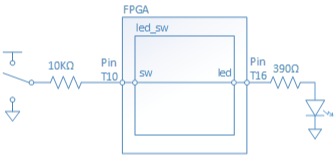
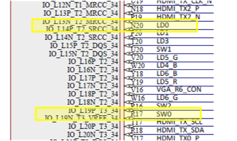
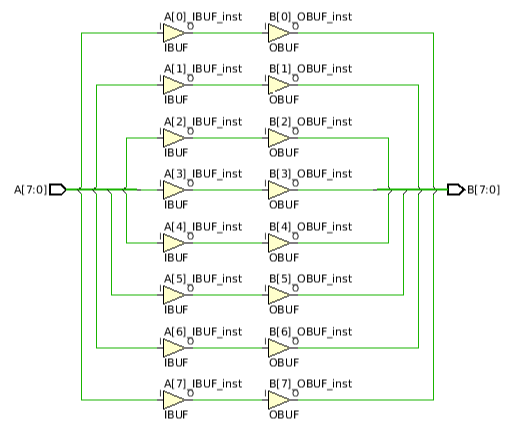

This project demonstrates how to define a basic digital circuit using Verilog, and how to implement that circuit using the FPGA inside the ZYNQ device on the Blackboard. This project connects the input switches on the Blackboard to the output LEDs. To accomplish this, you must write some basic Verilog code to create a design that connects the switches to the LEDs; connect the input and output signals in your design to physical pins on the ZYNQ device; implement your design using the synthesizer; and then program your desing into Blackboard’s FPGA.
Understand the Verilog Top Module is the boundary of your digital system;
Know how to use assign statements to drive new values onto wires;
Know how to declare input and output ports in Verilog;
Know how to write physical constraints in the xdc file to map I/Os (inputs/outputs) of a system to physical pins.
Background
Input and Output Devices
A Digital circuit contains a power supply, devices, and conduction nets. Some nets provide the circuit with inputs from the “outside world”, while others conversely provide information from the circuit to the outside world. The nets that provide an interface between the circuit and the outside world are called ports.
Circuits need input devices to generate input signals. Input devices can take many forms, among them keyboards (such as on a PC), buttons, and switches. Circuits also need output devices to communicate their state to the user. In this project, a switch is used as the input device and an LED is used as the output device.
We will build a circuit called led_sw as shown in Fig. 1. This simple circuit has an input port called sw and an output port called led.
The input port sw receives an input signal from a slide switch on Blackboard, and the output port led drives an LED.
We can easily describe this circuit using Verilog. But that is only part of the solution - we must also connect the “logical” circuit names in our design (i.e., sw and led) to the physical pins on the ZYNQ device that are connected to the switch and LED we wish to use.
Figure 1. led_sw Digital Circuit Diagram
Xilinx has defined the “.xdc” constraint file for this purpose. We can write statements in the .xdc file to connect the logical signal names we used in our Verilog circuit definition to the physical pin locations on the ZYNQ device. But first, we need to know what physical pins on the ZYNQ device are tied to the devices we want our logical circuit to drive. The figure below is taken from the Blackboard schematic. The yellow boxes show LD0 is connected to ZYNQ pin N20, and SW0 is connected to pin R17. So, when SW0 outputs 0V or 3.3V signal, ZYNQ pin R17 will be driven to 0V (logic ‘0’) or 3.3V (logic ‘1’), and any circuit node in our design we connect to pin R17 will also be driven to a ‘0’ or a ‘1’. Likewise, if we connect an output signal in our design to ZYNQ pin N20, that signal will drive LED0. We can turn on LED0 by driving that signal to a ‘1’ (3.3V), and we can turn the LED off by driving the signal to a ‘0’ (0V).
Figure 2. LD0 and SW0 on Blackboard’s Circuit Diagram
A little later in this project, we’ll show you how to create the required entries in the .xdc file.
Step 1: Create a new project
Create an empty project named project 2.v in the Vivado tool as shown in TUTORIAL: CREATE A VIVADO PROJECT.
Make sure you select the ZYNQ part that is on your Blackboard.
Step 2: Design the circuit in Verilog HDL
Add an empty Verilog file
Create and add a Verilog source file named led_sw.v to your project. If you can’t remember how, refer to Step 3 in the “Create Verilog File” section of the first project: PROJECT 1.1: GETTING STARTED WITH FPGA.
Declare Inputs and Outputs
Verilog is a hardware description language. The first thing that you need to descrbe about a digital system is its input and output. In led_sw circuit, we have one input named sw, and one output named led. The declaration of inputs and outputs will go between the brackets, after led_sw (similar to function declaration syntax in C language), as follows:
module led_sw(
output led,
input sw
);
Input/Output Declaration
A Verilog module declaraction is similar to the function prototype declaration in the C language.
It is also legal to declare the module as shown in the block below with a syntax similar to K&R style function declaration in C language.
By default, if you declare the signal as input sw;, sw is recognized as a single wire.
If you want to declare a bus, you need to specify the index of the bus at the time of declaration.
For example, if you want to declare an 8-bit wide input signal to take in the signals generated by 8 slide switches, you need an input sw which is 8-bit wide.
The following code declares such a 8-bit wide sw signal with index 7 on left-most bit and index 0 on right-most bit.
input [7:0] sw;
Describe the Digital Circuit
After the declaration of inputs and outputs, you need to implement the digital circuit by describing its functionality using Verilog language. The implementation code sits between module declaration and the endmodule keyword. In this project, we will use assign statement in Verilog to pass the digital value from input sw to output led. In another word, output signal led is driven by input signal sw.
assign led = sw;
Verilog: Assign Statement
In Verilog, assign statement is used to pass the value of a logic expression on the right to the variable on the left.
In the code above, the value of signal sw is passed to signal led. However, assign statement can be used with signal bus as well.
In the code below, both A and B are 8-bit wide, indexed as [7:0]. The value of input A is passed to output B, as described with the assign statement, resulting in a circuit shown in Figure 2.
input [7:0] A;
output [7:0] B;
assign A = B;
But what if A is defined as input [0:7] A;? Can you try to find a way to test it?
Figure 3. Circuit Schematic of pass 8-bit input A to 8-bit output B with assign statement.
End Description
Lastly, you must always make sure to end the module description with the endmodule keyword.
Verilog Source File
When you have completed the previous steps, your Verilog source file should look like this:
Create and add an empty constraint file named project2.xdc to your project, as shown in PROJECT 1.1: GETTING STARTED WITH FPGA. section Create Design Constraints in step 3.
Add Physical Constraints to Input and Output Ports
The circuit has been implemented but the Xilinx tools still need to know which physical pins on the FPGA the input port sw and output port led are mapped to. The first line on the XDC file specifies to the pin location of port sw. The second line specifies to the IO Standard of port sw. The third line and the forth line specifies the physical pin location and IO standard of port led.
The Zynq-7000 All Programmable SoC (XC7Z007S-CLG400) has an Artix 7 FPGA that is used on Blackboard.
The Artix 7 FPGA is packaged in 400-pin Ceramic Ball Grid Array (CBGA).
Figure 4 shows the bottom of the Zynq SoC chip on Blackboard board, and Figure 5 is the package view of the Zynq SoC in Vivado.
After a close inspection of Figure 5, you probably can figure out where pin R17 and pin N20 are located.
Usually in a digital system, a wire at a high voltage level is considered binary 1 and a wire at a low voltage level is considered binary 0. However, how high and how low should those voltages be? Actually, different devices may adopt different standards for what thoes voltages are. For example, the DDR3 memory operates at 1.8V, USB Connector operates at 5V, while the slide switches on Blackboard board will output 3.3V when on. So, organizations like JEDEC defines a series of interface standards that most electronic device makers support. Xilinx FPGAs support a wide range of interface voltage standards, but users like you need to tell the tools which voltage standard each pin in your design should use. On Blackboard board, the slide switch circuit is designed to output a 3.3V when the switch is on, and 0V when off. The LED on Blackboard board lights up when 3.3V is presented on the corresponding FPGA pin. So, in the constraint file you write above, the IOSTANDARD property of both sw and led are set to LVCMOS33, which is a 3.3V voltage standard defined by JEDEC in document JESD8C.01.
Where to find information about I/O Constraints
You can find the location you need from the Blackboard, or you can download the Blackboard master XDC for your board from the Real Digital®’s website and copy the corresponding lines for this step.
Step 4: Generate Bit File and Test it on your Blackboard
Run synthesis, implementation, and generate bitstream as shown in
PROJECT 1.1: GETTING STARTED WITH FPGA
step 4 and download it to your FPGA board using Hardware Manager.
Requirements
1. Verify the Demo Project: One Switch to Control One LED
Test that after you program your board, you can slide on the SW0 on your board to turn on LD0.
2. Try using all LEDs and switches
This project demonstrates how to use one slide switch to turn on one LED. Modify your code to connect all 8 slide switches to 8 green LEDs on you Blackboard, with each slide switch turning on the LED above it. Note that LEDs 4-7 are actually three LED packages, and that the green LEDs can be accessed individually or you can tie the signals of switches 4-7 to each RGB LED signal just as shown in the video to your right.
3. Reverse the order
Instead of turning on the LED above each switch, reverse the order so SW0 turns on LED7, SW1 turns on LED6, etc. Can you do this by modifying your Verilog source file? Or by modifying the xdc constraints file? Would either work? Try it! Try both!
Next Project: Push Buttons and Seven Segment Display